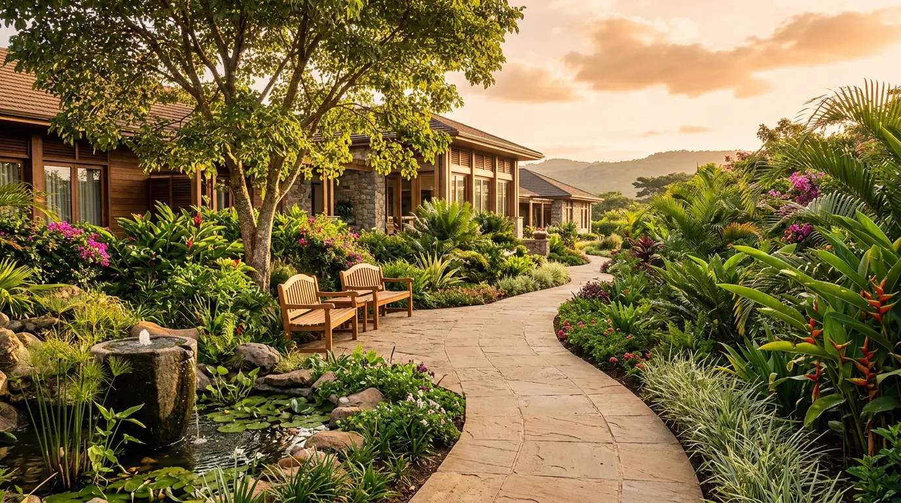
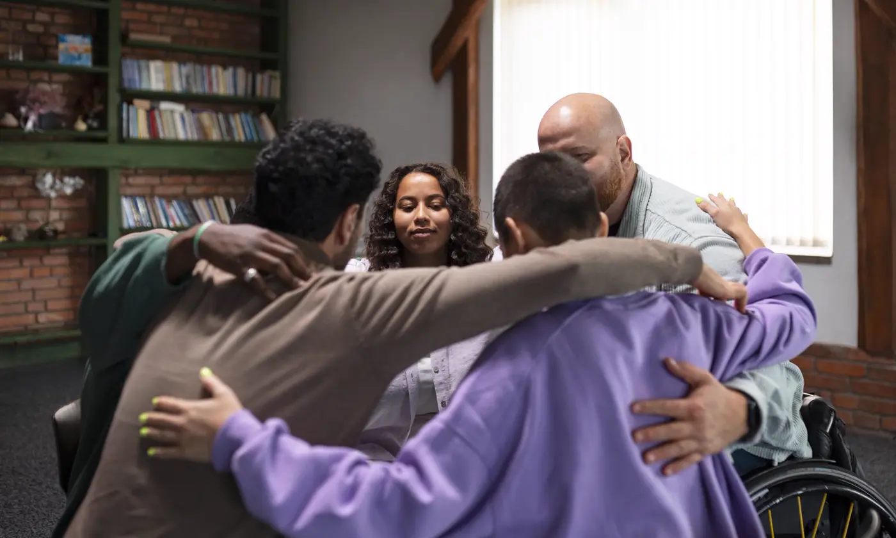

Stage 1
Medical detox
Stopping alcohol, opioids or sedatives can be dangerous without medical support. Our doctors and nurses monitor you and ease withdrawal symptoms so you stay safe.
Ask about detoxYour assessment decides where you start. Here is what each stage involves.
Stopping alcohol, opioids or sedatives can be dangerous without medical support. Our doctors and nurses monitor you and ease withdrawal symptoms so you stay safe.
Ask about detox
Stay at the centre for 30, 60 or 90 days. You get time away from everyday pressures, with structured therapy and a supportive community.
See how admission works
Therapy several times a week while you live at home. It helps you keep working or studying while you build new habits.
Discuss outpatient careRecovery continues after you leave. We stay in touch with practical support, so you are never starting over alone.
Speak to our aftercare teamParents, partners and children often carry worry, guilt and broken trust. Our family program helps everyone understand addiction and rebuild together.
Most people stay 30, 60 or 90 days. We recommend a length after your assessment and review it with you as you progress.
Safety and comfort come first. Our medical team uses medication to ease symptoms such as tremors, nausea, anxiety and poor sleep.
Yes. After an initial 7-day settling period, family visits and joint sessions are welcome on weekends.
No. We never share your admission or medical records with employers, insurers or anyone else without your written consent.
Tell us what is happening and we will recommend a starting point. There is no pressure and no obligation.